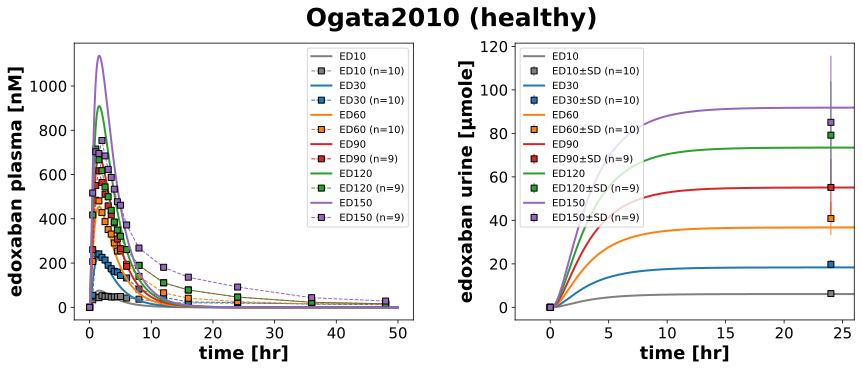
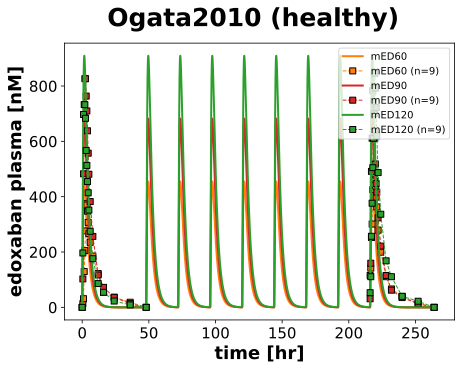
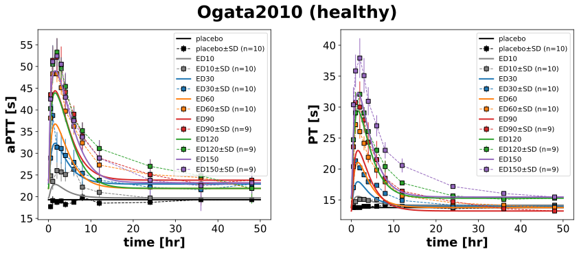

Ogata2010
Models
Datasets
- edoxaban_ED10: Ogata2010_edoxaban_ED10.tsv
- edoxaban_ED120: Ogata2010_edoxaban_ED120.tsv
- edoxaban_ED150: Ogata2010_edoxaban_ED150.tsv
- edoxaban_ED30: Ogata2010_edoxaban_ED30.tsv
- edoxaban_ED60: Ogata2010_edoxaban_ED60.tsv
- edoxaban_ED90: Ogata2010_edoxaban_ED90.tsv
- edoxaban_mED120: Ogata2010_edoxaban_mED120.tsv
- edoxaban_mED60: Ogata2010_edoxaban_mED60.tsv
- edoxaban_mED90: Ogata2010_edoxaban_mED90.tsv
- aPTT_ED10: Ogata2010_aPTT_ED10.tsv
- aPTT_ED120: Ogata2010_aPTT_ED120.tsv
- aPTT_ED150: Ogata2010_aPTT_ED150.tsv
- aPTT_ED30: Ogata2010_aPTT_ED30.tsv
- aPTT_ED60: Ogata2010_aPTT_ED60.tsv
- aPTT_ED90: Ogata2010_aPTT_ED90.tsv
- aPTT_mED120: Ogata2010_aPTT_mED120.tsv
- aPTT_mED60: Ogata2010_aPTT_mED60.tsv
- aPTT_mED90: Ogata2010_aPTT_mED90.tsv
- aPTT_mplacebo: Ogata2010_aPTT_mplacebo.tsv
- aPTT_placebo: Ogata2010_aPTT_placebo.tsv
- PT_ED10: Ogata2010_PT_ED10.tsv
- PT_ED120: Ogata2010_PT_ED120.tsv
- PT_ED150: Ogata2010_PT_ED150.tsv
- PT_ED30: Ogata2010_PT_ED30.tsv
- PT_ED60: Ogata2010_PT_ED60.tsv
- PT_ED90: Ogata2010_PT_ED90.tsv
- PT_mED120: Ogata2010_PT_mED120.tsv
- PT_mED60: Ogata2010_PT_mED60.tsv
- PT_mED90: Ogata2010_PT_mED90.tsv
- PT_mplacebo: Ogata2010_PT_mplacebo.tsv
- PT_placebo: Ogata2010_PT_placebo.tsv
- Xa_ED10: Ogata2010_Xa_ED10.tsv
- Xa_ED120: Ogata2010_Xa_ED120.tsv
- Xa_ED150: Ogata2010_Xa_ED150.tsv
- Xa_ED30: Ogata2010_Xa_ED30.tsv
- Xa_ED60: Ogata2010_Xa_ED60.tsv
- Xa_ED90: Ogata2010_Xa_ED90.tsv
- Xa_mED120: Ogata2010_Xa_mED120.tsv
- Xa_mED60: Ogata2010_Xa_mED60.tsv
- Xa_mED90: Ogata2010_Xa_mED90.tsv
- Xa_mplacebo: Ogata2010_Xa_mplacebo.tsv
- Xa_placebo: Ogata2010_Xa_placebo.tsv
- edoxaban_urine_ED10: Ogata2010_edoxaban_urine_ED10.tsv
- edoxaban_urine_ED120: Ogata2010_edoxaban_urine_ED120.tsv
- edoxaban_urine_ED150: Ogata2010_edoxaban_urine_ED150.tsv
- edoxaban_urine_ED30: Ogata2010_edoxaban_urine_ED30.tsv
- edoxaban_urine_ED60: Ogata2010_edoxaban_urine_ED60.tsv
- edoxaban_urine_ED90: Ogata2010_edoxaban_urine_ED90.tsv
Figures
- Fig1_single: Ogata2010_Fig1_single.svg
- Fig1_multi: Ogata2010_Fig1_multi.svg
- Fig2_single: Ogata2010_Fig2_single.svg
- Fig2_multi: Ogata2010_Fig2_multi.svg
{kind=link}
{kind=link}
{kind=link}
Fig1_single
|  |
Fig1_multi
|  |
Fig2_single
|  |
Fig2_multi

|
Code
../../../../src/pkdb_models/models/edoxaban/experiments/studies/ogata2010.py
from typing import Dict
from sbmlsim.data import DataSet, load_pkdb_dataframe
from sbmlsim.fit import FitMapping, FitData
from sbmlutils.console import console
from pkdb_models.models.edoxaban.experiments.base_experiment import (
EdoxabanSimulationExperiment,
)
from pkdb_models.models.edoxaban.experiments.metadata import Tissue, Route, Dosing, ApplicationForm, Health, Health, \
Fasting, EdoxabanMappingMetaData, Coadministration
from sbmlsim.plot import Axis, Figure
from sbmlsim.simulation import Timecourse, TimecourseSim
from pkdb_models.models.edoxaban.helpers import run_experiments
class Ogata2010(EdoxabanSimulationExperiment):
"""Simulation experiment of Ogata2010."""
bodyweight = 59.3
#fraction_absorbed = {"Fasting": EdoxabanSimulationExperiment.fasting_map["fasted"]}
colors = {
"placebo": "black",
"ED10": EdoxabanSimulationExperiment.dose_colors[10],
"ED30": EdoxabanSimulationExperiment.dose_colors[30],
"ED60": EdoxabanSimulationExperiment.dose_colors[60],
"ED90": EdoxabanSimulationExperiment.dose_colors[90],
"ED120": EdoxabanSimulationExperiment.dose_colors[120],
"ED150": EdoxabanSimulationExperiment.dose_colors[150],
"mED60": EdoxabanSimulationExperiment.dose_colors[60],
"mED90": EdoxabanSimulationExperiment.dose_colors[90],
"mED120": EdoxabanSimulationExperiment.dose_colors[120],
}
interventions = list(colors.keys())
doses = {
"placebo": 0,
"ED10": 10,
"ED30": 30,
"ED60": 60,
"ED90": 90,
"ED120": 120,
"ED150": 150,
"mED60": 60,
"mED90": 90,
"mED120": 120
}
infos_pk = {
"[Cve_edo]": "edoxaban",
"Aurine_edo": "edoxaban_urine",
}
infos_pd = {
"aPTT": "aPTT",
"PT": "PT",
# FIXME: also Anti-Factor Xa Activity
}
# using values at endtime to estimate t=0
pts = {
"placebo": 13.77,
"ED10": 14.15,
"ED30": 13.96,
"ED60": 13.77,
"ED90": 13.21,
"ED120": 15.28,
"ED150": 15.47,
"mED60": 14.0,
"mED90": 14.0,
"mED120": 14.0
}
# using values at endtime to estimate t=0
aptts = {
"placebo": 19.3,
"ED10": 19.7,
"ED30": 22.9,
"ED60": 21.9,
"ED90": 23.8,
"ED120": 21.9,
"ED150": 23.2,
"mED60": 33,
"mED90": 33,
"mED120": 33
}
def datasets(self) -> Dict[str, DataSet]:
dsets = {}
for fig_id in ["Fig1", "Fig2", "Fig3", "Fig4", "Tab1A"]:
df = load_pkdb_dataframe(f"{self.sid}_{fig_id}", data_path=self.data_path)
for label, df_label in df.groupby("label"):
dset = DataSet.from_df(df_label, self.ureg)
if label.startswith("edoxaban"):
dset.unit_conversion("mean", 1 / self.Mr.edo)
dsets[label] = dset
return dsets
def simulations(self) -> Dict[str, TimecourseSim]:
Q_ = self.Q_
tcsims = {}
for intervention in self.interventions:
dose = self.doses[intervention]
if intervention.startswith("m"):
# multiple dosing
tc0 = Timecourse(
start=0,
end=48 * 60, # [min]
steps=1000,
changes={
**self.default_changes(),
"PODOSE_edo": Q_(dose, "mg"),
"BW": Q_(self.bodyweight, "kg"),
"PT_ref": Q_(self.pts[intervention], "s"),
"aPTT_ref": Q_(self.aptts[intervention], "s")
},
)
tc1 = Timecourse(
start=0,
end=24 * 60, # [min]
steps=500,
changes={
"PODOSE_edo": Q_(dose, "mg"),
},
)
tc2 = Timecourse(
start=0,
end=50 * 60, # [min]
steps=1000,
changes={
"PODOSE_edo": Q_(dose, "mg"),
},
)
tcsims[f"{intervention}"] = TimecourseSim(
[tc0] + [tc1 for _ in range(7)] + [tc2]
)
else:
# single dose
tcsims[f"{intervention}"] = TimecourseSim(
[Timecourse(
start=0,
end=50 * 60, # [min]
steps=1000,
changes={
**self.default_changes(),
"BW": Q_(self.bodyweight, "kg"),
"PODOSE_edo": Q_(dose, "mg"),
"PT_ref": Q_(self.pts[intervention], "s"),
"aPTT_ref": Q_(self.aptts[intervention], "s")
},
)]
)
return tcsims
def fit_mappings(self) -> Dict[str, FitMapping]:
mappings = {}
for intervention in self.interventions:
# PK
for ks, sid in enumerate(self.infos_pk):
name = self.infos_pk[sid]
if "placebo" in intervention:
continue
if "urine" in name and "m" in intervention:
continue
mappings[f"fm_{name}_{intervention}"] = FitMapping(
self,
reference=FitData(
self,
dataset=f"{name}_{intervention}",
xid="time",
yid="mean",
yid_sd="mean_sd" if "urine" in name else None,
count="count",
),
observable=FitData(
self, task=f"task_{intervention}", xid="time", yid=sid,
),
metadata=EdoxabanMappingMetaData(
tissue=Tissue.URINE if "urine" in name else Tissue.PLASMA,
route=Route.PO,
application_form=ApplicationForm.TABLET,
dosing= Dosing.MULTIPLE if "m" in intervention else Dosing.SINGLE,
health=Health.HEALTHY,
fasting=Fasting.FASTED,
coadministration=Coadministration.NONE
),
)
# PD
for ks, sid in enumerate(self.infos_pd):
name = self.infos_pd[sid]
mappings[f"fm_{intervention}_{name}"] = FitMapping(
self,
reference=FitData(
self,
dataset=f"{name}_{intervention}",
xid="time",
yid="mean",
yid_sd="mean_sd",
count="count",
),
observable=FitData(
self, task=f"task_{intervention}", xid="time", yid=sid,
),
metadata=EdoxabanMappingMetaData(
tissue=Tissue.PLASMA,
route=Route.PO,
application_form=ApplicationForm.TABLET,
dosing=Dosing.MULTIPLE if "m" in intervention else Dosing.SINGLE,
health=Health.HEALTHY,
fasting=Fasting.FASTED,
coadministration=Coadministration.NONE
),
)
return mappings
def figures(self) -> Dict[str, Figure]:
return {
**self.figure_pk(),
**self.figure_pd()
}
def figure_pk(self) -> Dict[str, Figure]:
subsets = ["single", "multi"]
figures = {}
for subset in subsets:
if subset == "single":
fig = Figure(
experiment=self,
sid=f"Fig1_{subset}",
num_cols=2,
name=f"{self.__class__.__name__} (healthy)",
)
plots = fig.create_plots(
xaxis=Axis(self.label_time, unit=self.unit_time), legend=True
)
plots[0].set_yaxis(self.label_edo_plasma, unit=self.unit_edo)
plots[1].set_yaxis(self.label_edo_urine, unit=self.unit_edo_urine)
plots[1].xaxis.min = -3
plots[1].xaxis.max = 26
elif subset == "multi":
fig = Figure(
experiment=self,
sid=f"Fig1_{subset}",
num_cols=1,
name=f"{self.__class__.__name__} (healthy)",
)
plots = fig.create_plots(
xaxis=Axis(self.label_time, unit=self.unit_time), legend=True
)
plots[0].set_yaxis(self.label_edo_plasma, unit=self.unit_edo)
for intervention in self.interventions:
if "placebo" in intervention:
continue
for ks, sid in enumerate(self.infos_pk):
name = self.infos_pk[sid]
if subset == "multi" and "urine" in name:
continue
if subset == "single" and intervention.startswith("m"):
continue
elif subset == "multi" and not intervention.startswith("m"):
continue
# simulation
plots[ks].add_data(
task=f"task_{intervention}",
xid="time",
yid=sid,
label=intervention,
color=self.colors[intervention],
)
# data
plots[ks].add_data(
dataset=f"{name}_{intervention}",
xid="time",
yid="mean",
yid_sd="mean_sd" if "urine" in name else None,
count="count",
label=intervention,
color=self.colors[intervention],
linestyle="" if "urine" in name else "--"
)
figures[fig.sid] = fig
return figures
def figure_pd(self) -> Dict[str, Figure]:
figures = {}
subsets = ["single", "multi"]
for subset in subsets:
fig = Figure(
experiment=self,
sid=f"Fig2_{subset}",
num_cols=2,
num_rows=1,
name=f"{self.__class__.__name__} (healthy)",
)
plots = fig.create_plots(
xaxis=Axis(self.label_time, unit=self.unit_time),
legend=True,
)
plots[0].set_yaxis(self.labels["aPTT"], unit=self.units["aPTT"])
plots[1].set_yaxis(self.labels["PT"], unit=self.units["PT"])
for intervention in self.interventions:
if subset == "single" and intervention.startswith("m"):
continue
elif subset == "multi" and not intervention.startswith("m"):
continue
for ks, sid in enumerate(self.infos_pd):
name = self.infos_pd[sid]
# simulation
plots[ks].add_data(
task=f"task_{intervention}",
xid="time",
yid=sid,
label=intervention,
color=self.colors[intervention],
)
# data
plots[ks].add_data(
dataset=f"{name}_{intervention}",
xid="time",
yid="mean",
yid_sd="mean_sd",
count="count",
label=intervention,
color=self.colors[intervention],
)
figures[fig.sid] = fig
return figures
if __name__ == "__main__":
run_experiments(Ogata2010, output_dir=Ogata2010.__name__)